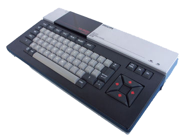

welcome to Exiled Resistance Gamers emulation archive - MSX
back
home
10-Yard Fight (Japan) (Alt 1).rom
10-Yard Fight (Japan).rom
1942 (Japan) (Alt 1).rom
1942 (Japan).rom
3-D Golf Simulation (Japan) (Alt 1).rom
3-D Golf Simulation (Japan) (High Speed).rom
3-D Golf Simulation (Japan).rom
3D Tennis (Japan).rom
A.E. (Japan).rom
A1 Spirit - The Way to Formula-1 (Japan).rom
Actman (Japan) (Alt 1).rom
Actman (Japan).rom
Adven' Chuta! (Japan).rom
Albatros (Japan) (Alt 1).rom
Albatros (Japan).rom
Alcazar - The Forgotten Fortress (Japan) (Alt 1).rom
Alcazar - The Forgotten Fortress (Japan).rom
Alibaba and 40 Thieves (Japan) (Alt 1).rom
Alibaba and 40 Thieves (Japan) (Alt 2).rom
Alibaba and 40 Thieves (Japan).rom
Alien 8 (Japan) (Alt 1).rom
Alien 8 (Japan).rom
Aliens - Alien 2 (Japan) (Alt 1).rom
Aliens - Alien 2 (Japan) (Alt 2).rom
Aliens - Alien 2 (Japan).rom
Alpha Roid (Japan) (Alt 1).rom
Alpha Roid (Japan).rom
Alpha Squadron (Japan).rom
American Truck (Japan) (Alt 1).rom
American Truck (Japan) (Alt 2).rom
American Truck (Japan).rom
Anaza - Kaleidoscope Special (Japan).rom
Angelo (Japan) (Alt 1).rom
Angelo (Japan).rom
Animal Land (Japan).rom
Antarctic Adventure (Europe) (Alt 1).rom
Antarctic Adventure (Europe).rom
Antarctic Adventure (Japan).rom
Anty (Japan) (Alt 1).rom
Anty (Japan).rom
Aqua Polis SOS (Japan).rom
Aquattack (Japan).rom
Aramo (Japan).rom
Arkanoid (Japan) (Alt 1).rom
Arkanoid (Japan) (Alt 2).rom
Arkanoid (Japan) (Alt 3).rom
Arkanoid (Japan).rom
Athletic Ball (Japan).rom
Athletic Land (Japan) (Alt 1).rom
Athletic Land (Japan) (Beta).rom
Athletic Land (Japan).rom
Attack Four Volley Ball (Japan).rom
B.C.'s Quest (Japan) (Alt 1).rom
B.C.'s Quest (Japan).rom
Back Gammon (Japan) (Alt 1).rom
Back Gammon (Japan).rom
Back to the Future (Japan) (Alt 1).rom
Back to the Future (Japan).rom
Backgammon (Europe).rom
Balance (Japan) (Alt 1).rom
Balance (Japan) (Alt 2).rom
Balance (Japan) (Alt 3).rom
Balance (Japan) (Alt 4).rom
Balance (Japan).rom
Banana (Japan).rom
Bank Panic (Japan) (Alt 1).rom
Bank Panic (Japan).rom
Basic Lessons 1 (Japan).rom
Basic Lessons 2 (Japan).rom
Batman (Japan).rom
Batten Tanuki no Daibouken (Japan) (Alt 1).rom
Batten Tanuki no Daibouken (Japan) (Alt 2).rom
Batten Tanuki no Daibouken (Japan) (v1.03).rom
Battle Cross (Japan).rom
Battleship Clapton II (Japan) (Alt 1).rom
Battleship Clapton II (Japan).rom
Beach-Head (Europe).rom
Beam Rider (Japan) (Alt 1).rom
Beam Rider (Japan).rom
Becky (Japan) (Alt 1).rom
Becky (Japan) (Alt 2).rom
Becky (Japan).rom
Bee & Flower (Japan) (Alt 1).rom
Bee & Flower (Japan) (Alt 2).rom
Bee & Flower (Japan).rom
Bifamu (Japan) (Alt 1).rom
Bifamu (Japan).rom
Binary Land (Japan).rom
Black Onyx II, The - Search for the Fire Crystal (Japan).rom
Black Onyx, The (Japan).rom
Blagger MSX (Europe) (Converted from Tape).rom
Block Hole (Korea) (Unl).rom
Blockade Runner (Japan).rom
Boggy '84 (Japan) (Alt 1).rom
Boggy '84 (Japan) (Alt 2).rom
Boggy '84 (Japan).rom
Boing Boing (Spain).rom
Bokosuka Wars (Japan) (Alt 1).rom
Bokosuka Wars (Japan).rom
Bomber King (Japan).rom
Bomber Man (Japan).rom
Bomber Man Special (Japan).rom
Boogie Woogi Jungle (Japan) (Alt 1).rom
Boogie Woogi Jungle (Japan) (Alt 2).rom
Boogie Woogi Jungle (Japan).rom
Boomerang (Japan) (Alt 1).rom
Boomerang (Japan).rom
Borfesu (Japan).rom
Bosconian (Japan) (Alt 1).rom
Bosconian (Japan) (Alt 2).rom
Bosconian (Japan).rom
Bouken Roman - Dota (Japan) (Alt 1).rom
Bouken Roman - Dota (Japan).rom
Boulder Dash (Japan).rom
Bouncing Block (Spain) (Alt 1).rom
Bouncing Block (Spain).rom
Brain, The (Japan).rom
Break In (Japan).rom
Break Out (Japan).rom
Brother Adventure (Korea) (Alt 1) (Unl).rom
Brother Adventure (Korea) (Unl).rom
Bruce Lee (Japan).rom
Bubble Bobble (Korea) (Alt 1) (Unl).rom
Bubble Bobble (Korea) (Unl).rom
Burgertime (Japan).rom
Buru To Marty Kikiippatsu - Inspecteur Z (Japan).rom
Butam Pants (Japan) (Alt 1).rom
Butam Pants (Japan) (Alt 2).rom
Butam Pants (Japan).rom
Cabbage Patch Kids (Japan) (Alt 1).rom
Cabbage Patch Kids (Japan).rom
Candoo Ninja (Japan) (Alt 1).rom
Candoo Ninja (Japan).rom
Cannon Ball (Japan) (Alt 1).rom
Cannon Ball (Japan).rom
Cannon Fighter (Japan).rom
Captain Chef (Japan).rom
Car Fighter (Japan).rom
Car Jamboree (Japan) (Alt 1).rom
Car Jamboree (Japan).rom
Car-Race (Japan) (Alt 1).rom
Car-Race (Japan) (Alt 2).rom
Car-Race (Japan).rom
Casio Daishogai Keiba (Japan).rom
Casio Pachinko-U.F.O. (Japan).rom
Casio Ski Command (Japan) (Alt 1).rom
Casio Ski Command (Japan).rom
Casio Worldopen (Japan).rom
Castle Excellent (Japan) (Alt 1).rom
Castle Excellent (Japan).rom
Castle, The (Japan).rom
Chack'n Pop (Japan) (Alt 1).rom
Chack'n Pop (Japan).rom
Challenge Derby (Japan).rom
Champion Boxing (Japan).rom
Champion Ice Hockey (Japan).rom
Champion Kendou (Japan) (Alt 1).rom
Champion Kendou (Japan).rom
Champion Pro Wrestling (Japan) (Alt 1).rom
Champion Pro Wrestling (Japan) (Alt 2).rom
Champion Pro Wrestling (Japan).rom
Champion Soccer (Japan).rom
Championship Lode Runner (Japan).rom
Checkers in Tantan Tanuki (Japan).rom
Cheese (Japan) (Program).rom
Chess (Japan).rom
Chess Game, The (Europe).rom
Choplifter (Japan) (Alt 1).rom
Choplifter (Japan) (Alt 2).rom
Choplifter (Japan).rom
Choro Q (Japan) (Alt 1).rom
Choro Q (Japan).rom
Chugaku Hisshu Eibunpo 1 (Japan).rom
Circus Charlie (Japan).rom
City Connection (Japan) (Alt 1).rom
City Connection (Japan).rom
Coaster Race (Japan) (Alt 1).rom
Coaster Race (Japan) (Alt 2).rom
Coaster Race (Japan).rom
Color Ball (Japan) (Alt 1).rom
Color Ball (Japan) (Alt 2).rom
Color Ball (Japan).rom
Columns (Japan).rom
Come On! Picot (Japan).rom
Comecocos (Spain).rom
Comet Tail (Japan).rom
Comic Bakery (Japan) (Alt 1).rom
Comic Bakery (Japan) (Alt 2).rom
Comic Bakery (Japan).rom
Computer Billiards (Japan).rom
Computer Nyuumon - Computer Lessons (Japan).rom
Computer Othello (Japan) (Alt 1).rom
Computer Othello (Japan).rom
Computer Pachinko (Japan).rom
Con-Dori (Japan) (Alt 1).rom
Con-Dori (Japan) (Alt 2).rom
Con-Dori (Japan).rom
Confused (Europe).rom
Cosmo (Japan) (Alt 1).rom
Cosmo (Japan).rom
Cosmo-Explorer (Japan) (Alt 1).rom
Cosmo-Explorer (Japan).rom
Courageous Perseus (Japan) (Alt 1).rom
Courageous Perseus (Japan).rom
Craze (Japan).rom
Crazy Bullet (Japan) (Alt 1).rom
Crazy Bullet (Japan).rom
Crazy Cars (Europe).rom
Crazy Train (Japan) (Alt 1).rom
Crazy Train (Japan).rom
Cross Blaim (Japan).rom
Crusader (Japan) (Alt 1).rom
Crusader (Japan) (Alt 2).rom
Crusader (Japan).rom
C-So! (Japan).rom
Daidasso (Japan).rom
Daiva Story 4 - Asura's Bloodfeud (Japan).rom
Dam Busters, The (Japan) (Alt 1).rom
Dam Busters, The (Japan).rom
Danger X4 (Japan) (Alt 1).rom
Danger X4 (Japan) (Alt 2).rom
Danger X4 (Japan).rom
David II (Japan).rom
Dawn Patrol (Japan).rom
D-Day (Japan) (Alt 1).rom
D-Day (Japan) (Alt 2).rom
D-Day (Japan) (Alt 3).rom
D-Day (Japan).rom
Decathlon (Japan) (Alt 1).rom
Decathlon (Japan).rom
Deep Dungeon (Japan).rom
Deep Dungeon II (Japan).rom
Demon Crystal, The (Japan).rom
Demonia I (Europe).rom
Designer's Pencil, The (Europe) (Program).rom
Devil's Heaven (Japan).rom
Dig Dug (Japan) (Alt 1).rom
Dig Dug (Japan).rom
Digital Devil Monogatari Megami Tensei (Japan) (Alt 1).rom
Digital Devil Monogatari Megami Tensei (Japan).rom
Dip Dip (Spain).rom
Doki Doki Penguin Land (Japan) (Alt 1).rom
Doki Doki Penguin Land (Japan).rom
Doordoor (Japan).rom
Dorodon (Japan).rom
Double Dragon (Korea) (Unl).rom
Dr. Copy (Japan).rom
Dragon Attack (Japan) (Alt 1).rom
Dragon Attack (Japan).rom
Dragon Quest (Japan).rom
Dragon Quest II (Japan) (Alt 1).rom
Dragon Quest II (Japan).rom
Dragon Slayer (Japan).rom
Dragon Slayer II - Xanadu (Japan).rom
Dragon Slayer IV - Drasle Family (Japan).rom
Dragon Slayer Jr. - Romancia (Japan).rom
Drainer (Japan).rom
Druaga no Tou (Japan).rom
Dungeon Hunter (Japan).rom
Dungeon Master (Japan).rom
Dunk Shot (Japan) (Alt 1).rom
Dunk Shot (Japan).rom
DX7 Voicing Program (Japan) (Program).rom
Dynamite Bowl (Japan).rom
Eagle Fighter (Japan) (Alt 1).rom
Eagle Fighter (Japan).rom
Eddy 2 (Japan) (Program) (Alt 1).rom
Eddy 2 (Japan) (Program).rom
Eggerland Mystery (Japan).rom
Eiwa Jiten - English Japanese (Japan) (Program).rom
Elevator Action (Japan).rom
Erika (Japan).rom
Exa Innova (Japan) (Alt 1).rom
Exa Innova (Japan).rom
Exchanger (Japan) (Alt 1).rom
Exchanger (Japan).rom
Exerion (Japan) (Alt 1).rom
Exerion (Japan) (Alt 2).rom
Exerion (Japan).rom
Exerion II - Zorni (Japan) (Alt 1).rom
Exerion II - Zorni (Japan).rom
Exoide-Z (Japan) (Alt 1).rom
Exoide-Z (Japan) (Alt 2).rom
Exoide-Z (Japan).rom
Exoide-Z Area 5 (Japan).rom
F-1 Spirit - The Way to Formula-1 (Japan) (Alt 1).rom
F-1 Spirit - The Way to Formula-1 (Japan).rom
F16 Fighting Falcon (Japan).rom
Fa Tetris (Korea) (Unl).rom
Fairy (Japan).rom
Fairy Land Story, The (Japan) (Alt 1).rom
Fairy Land Story, The (Japan).rom
Family Automation Language Community (Japan) (Program).rom
Fandom Library #1 (Japan).rom
Fandom Library #2 (Japan).rom
Fandom Library #3 (Japan).rom
Fantasy Zone (Japan).rom
Farm Kit (Europe) (Program).rom
Fathom (Japan).rom
FB-01 Voicing Program (Japan) (Program).rom
Final Justice (Japan) (Alt 1).rom
Final Justice (Japan) (Alt 2).rom
Final Justice (Japan).rom
Final Mahjong (Japan).rom
Final Zone Wolf (Japan).rom
Fire Rescue (Japan) (Alt 1).rom
Fire Rescue (Japan).rom
Flappy - Limited 85 (Japan).rom
Flappy (Japan) (Alt 1).rom
Flappy (Japan).rom
Flash Point (Korea) (Alt 1) (Unl).rom
Flash Point (Korea) (Unl).rom
Flash Splash (Japan).rom
Flicky (Japan).rom
Flics, Les (France).rom
Flight Deck (Japan) (Alt 1).rom
Flight Deck (Japan).rom
Flight Simulator (Japan).rom
Flipper Slipper (Japan) (Alt 1).rom
Flipper Slipper (Japan).rom
FM Music Composer (Japan) (Program).rom
FM Music Composer II (Japan) (Program).rom
FM Music Macro (Japan) (Program).rom
FM Pana Amusement Cartridge (Japan) (Program).rom
FM Voicing Program (Japan) (Program).rom
Formation Z (Japan) (Alt 1).rom
Formation Z (Japan).rom
Frogger (Japan) (Alt 1).rom
Frogger (Japan).rom
Front Line (Japan) (Alt 1).rom
Front Line (Japan) (Alt 2).rom
Front Line (Japan).rom
Fruit Search (Japan) (Alt 1).rom
Fruit Search (Japan).rom
Funky Mouse (Japan).rom
Futbol (Spain).rom
Fuun Takeshijyou (Japan).rom
Galaga (Japan) (Alt 1).rom
Galaga (Japan) (Alt 2).rom
Galaga (Japan) (Alt 3).rom
Galaga (Japan).rom
Galaxian (Japan) (Alt 1).rom
Galaxian (Japan) (Alt 2).rom
Galaxian (Japan).rom
Gall Force - Defense of Chaos (Japan) (Alt 1).rom
Gall Force - Defense of Chaos (Japan) (Alt 2).rom
Gall Force - Defense of Chaos (Japan).rom
Gambler Jiko Chuushinha (Japan).rom
Game Land (Japan).rom
Game Master (Europe) (Alt 1).rom
Game Master (Europe).rom
Game Master (Japan) (Alt 1).rom
Game Master (Japan).rom
Game Master II (Japan) (Alt 1).rom
Game Master II (Japan).rom
Game World - 126 Games (Korea) (Unl).rom
Gang Master (Japan).rom
Gate of Labyrinth (Japan).rom
Genghis Khan (Japan).rom
Ghostbusters (Europe).rom
Glider (Japan) (Alt 1).rom
Glider (Japan).rom
Gojira vs 3 Daikaijuu (Japan) (Alt 1).rom
Gojira vs 3 Daikaijuu (Japan).rom
Gojira-kun (Japan) (Alt 1).rom
Gojira-kun (Japan).rom
Gokiburi Daisakusen - Bug Bomb (Japan).rom
Golf Game (Japan).rom
Golvellius (Japan).rom
Gomok Narabe - Omo Go (Japan) (Alt 1).rom
Gomok Narabe - Omo Go (Japan).rom
Goonies, The (Japan) (Alt 1).rom
Goonies, The (Japan) (Alt 2).rom
Goonies, The (Japan).rom
GP World (Japan).rom
Green Beret (Europe) (Alt 1).rom
Green Beret (Europe).rom
Grog's Revenge (Japan) (Alt 1).rom
Grog's Revenge (Japan).rom
Guardic (Japan) (Alt 1).rom
Guardic (Japan).rom
Gulkave (Japan) (Alt 1).rom
Gulkave (Japan).rom
Gun Fright (Japan).rom
Gunjin Shougi Mars (Japan).rom
Gyrodine (Japan).rom
H.E.R.O. (Japan).rom
Hades no Monsho (Japan) (Alt 1).rom
Hades no Monsho (Japan).rom
Hafanuda Koi Koi - Gostop Godori (Japan).rom
Haja No Fuin (Japan).rom
Hanafuta (Japan).rom
Hang-On (Japan) (Alt 1).rom
Hang-On (Japan) (Alt 2).rom
Hang-On (Japan).rom
Harapeko Pakkun (Japan).rom
Harryfox MSX Special (Japan).rom
Harryfox Yki No Maoh (Japan).rom
Haunted Boynight (Japan).rom
Heavy Boxing (Japan) (Alt 1).rom
Heavy Boxing (Japan).rom
Heist, The (Japan).rom
Helitank (Japan).rom
High Way Star (Japan).rom
High Way Star (Korea).rom
Hisya (Japan).rom
Hitsuji Yai - Preety Sheep (Japan).rom
Hole in One (Japan) (Alt 1).rom
Hole in One (Japan) (Alt 2).rom
Hole in One (Japan) (Alt 3).rom
Hole in One (Japan).rom
Hole in One Professional (Japan) (Alt 1).rom
Hole in One Professional (Japan).rom
Home Calc (Japan) (Program).rom
Home Writer (Japan) (Program).rom
Honkball (Japan).rom
Hopper (Europe).rom
Hudson 3D Golf (Japan) (Alt 1).rom
Hudson 3D Golf (Japan).rom
Hustle! Chumy (Japan) (Alt 1).rom
Hustle! Chumy (Japan).rom
Hydlide (Japan).rom
Hydlide 3 - The Space Memories (Japan).rom
Hydlide II - Shine of Darkness (Japan) (Alt 1).rom
Hydlide II - Shine of Darkness (Japan).rom
Hyper Olympic 1 (Japan).rom
Hyper Olympic 2 (Japan).rom
Hyper Rally (Japan) (Alt 1).rom
Hyper Rally (Japan) (Alt 2).rom
Hyper Rally (Japan) (Alt 3).rom
Hyper Rally (Japan).rom
Hyper Sports 1 (Japan) (Alt 1).rom
Hyper Sports 1 (Japan).rom
Hyper Sports 2 (Japan).rom
Hyper Sports 3 (Japan) (Alt 1).rom
Hyper Sports 3 (Japan) (Alt 2).rom
Hyper Sports 3 (Japan).rom
Ice World (Japan).rom
Iga Ninpouten - Small Ninja (Japan).rom
Iga Ninpouten 2 - Small Ninja 2 (Japan).rom
Indian no Bouken (Japan).rom
Iriegas - Theseus (Japan) (Alt 1).rom
Iriegas - Theseus (Japan).rom
Iriegas (Japan).rom
Issunhoushi No Donnamondai (Japan) (Alt 1).rom
Issunhoushi No Donnamondai (Japan).rom
J.P. Winkle (Japan).rom
Jagur (Japan) (Alt 1).rom
Jagur (Japan).rom
Janka (Japan).rom
Japanese MSX-Write (Japan) (Program).rom
Jet Set Willy (Japan) (Alt 1).rom
Jet Set Willy (Japan).rom
Jigsaw Set (Japan).rom
Jissen - 4-nin Mahjong (Japan).rom
Jisyo Data (Japan) (Program).rom
Joytelop (Japan) (Program).rom
Jump (Japan).rom
Jump Coaster (Japan).rom
Jump Land (Japan).rom
Jumping Rabbit (Japan).rom
Juno First (Japan) (Alt 1).rom
Juno First (Japan).rom
Jyan Friend (Japan).rom
Jyankyo (Japan).rom
Jyanyuu (Japan).rom
Kage no Densetsu - Legend of Kage, The (Japan) (Alt 1).rom
Kage no Densetsu - Legend of Kage, The (Japan).rom
Kakikukekon (Japan) (Program).rom
Karamaru (Japan).rom
Karuizawa (Japan).rom
Keiba, The (Japan) (Program).rom
Keystone Kapers (Japan) (Alt 1).rom
Keystone Kapers (Japan).rom
Kick It (Japan) (Alt 1).rom
Kick It (Japan).rom
Kinasai (Japan) (Unl).rom
King & Balloon (Japan) (Alt 1).rom
King & Balloon (Japan).rom
King Knight (Japan) (Alt 1).rom
King Knight (Japan) (Alt 2).rom
King Knight (Japan).rom
King's Valley (Japan, Europe) (Alt 1).rom
King's Valley (Japan, Europe) (Alt 2).rom
King's Valley (Japan, Europe) (Alt 3).rom
King's Valley (Japan, Europe) (Alt 4).rom
King's Valley (Japan, Europe).rom
King's Valley II (Japan, Europe).rom
Kinnikuman - Muscle Man (Japan) (Alt 1).rom
Kinnikuman - Muscle Man (Japan).rom
Knight Lore (Japan).rom
Knightmare - Majou Densetsu (Japan) (Alt 1).rom
Knightmare - Majou Densetsu (Japan) (Alt 2).rom
Knightmare - Majou Densetsu (Japan).rom
Knightmare II - The Maze of Galious (Japan).rom
Knightmare III - Shalom (Japan).rom
Knither Special (Japan).rom
Konami's Baseball (Japan) (Alt 1).rom
Konami's Baseball (Japan).rom
Konami's Billiards (Europe).rom
Konami's Boxing (Japan) (Alt 1).rom
Konami's Boxing (Japan) (Alt 2).rom
Konami's Boxing (Japan).rom
Konami's Football (Europe) (Alt 1).rom
Konami's Football (Europe) (Alt 2).rom
Konami's Football (Europe).rom
Konami's Golf (Japan) (Alt 1).rom
Konami's Golf (Japan) (Alt 2).rom
Konami's Golf (Japan).rom
Konami's Mahjong (Japan).rom
Konami's Ping-Pong (Japan) (Alt 1).rom
Konami's Ping-Pong (Japan) (Alt 2).rom
Konami's Ping-Pong (Japan) (Alt 3).rom
Konami's Ping-Pong (Japan).rom
Konami's Soccer (Japan) (Alt 1).rom
Konami's Soccer (Japan) (Alt 2).rom
Konami's Soccer (Japan) (Alt 3).rom
Konami's Soccer (Japan).rom
Konami's Synthesizer (Japan) (Program).rom
Konami's Tennis (Japan) (Alt 1).rom
Konami's Tennis (Japan).rom
Koneko no Daibouken - Catboy (Japan).rom
Kung Fu Acho (Japan) (Alt 1).rom
Kung Fu Acho (Japan).rom
Kung Fu Master (Japan) (Alt 1).rom
Kung Fu Master (Japan) (Alt 2).rom
Kung Fu Master (Japan).rom
Kung Fu Taigun (Japan) (Alt 1).rom
Kung Fu Taigun (Japan).rom
Ladder Building (Japan).rom
Laptick 2 (Japan).rom
Le Mans 2 (Europe).rom
Legendly Knight (Korea) (Alt 1).rom
Legendly Knight (Korea).rom
Leonard (Spain).rom
Light Corridor, The (Europe).rom
Links, The (Japan) (NGA II) (Program) (Alt 1).rom
Links, The (Japan) (NGA II) (Program).rom
Links, The (Japan) (Program).rom
Lode Runner (Japan) (Alt 1).rom
Lode Runner (Japan).rom
Lode Runner II (Japan).rom
Lord Over (Japan).rom
Lot Lot (Japan).rom
Lunar Ball (Japan).rom
M36 - A Life Planet (Japan).rom
Mac Attack (Europe).rom
Machinegun Joe vs The Mafia (Japan).rom
Macross (Japan) (Alt 1).rom
Macross (Japan).rom
Magical Kid Wiz (Japan) (Alt 1).rom
Magical Kid Wiz (Japan) (Alt 2).rom
Magical Kid Wiz (Japan).rom
Magical Tree (Japan) (Alt 1).rom
Magical Tree (Japan).rom
Magnum Prohibition 1931 (Japan) (Alt 1).rom
Magnum Prohibition 1931 (Japan).rom
Manes (Japan) (Alt 1).rom
Manes (Japan) (Alt 2).rom
Manes (Japan).rom
Mappy (Japan) (Alt 1).rom
Mappy (Japan) (Alt 2).rom
Mappy (Japan).rom
Marchen Veil I (Japan).rom
Marine Battle (Japan).rom
Mars II (Japan).rom
Mashou no Tachi Goblin (Japan) (Alt 1).rom
Mashou no Tachi Goblin (Japan).rom
Master Chess (Europe).rom
Megalopolis SOS (Japan) (Alt 1).rom
Megalopolis SOS (Japan) (Alt 2).rom
Megalopolis SOS (Japan).rom
Meikyuu Shinwa (Japan) (Alt 1).rom
Meikyuu Shinwa (Japan).rom
MIDI Macro (Japan) (Program).rom
Midnight Brothers (Japan) (Alt 1).rom
Midnight Brothers (Japan).rom
Midnight Building (Japan).rom
Midway (Japan).rom
Mil Caras (Spain).rom
Mini Golf (Japan) (Alt 1).rom
Mini Golf (Japan).rom
Mirai - Future (Japan).rom
Mitsumega Toohru - Three-Eyed One Comes Here, The (Japan).rom
Moai no Hibou (Japan).rom
Moai no Hibou (Korea).rom
Mobile Planet Suthirus - Approach from the Westgate (Japan).rom
Mobile-Suit Gundam - Last Shooting (Japan) (Alt 1).rom
Mobile-Suit Gundam - Last Shooting (Japan).rom
Mokarimakka (Japan).rom
Mole (Japan).rom
Mole Mole 2 (Japan).rom
Monkey Academy (Japan) (Alt 1).rom
Monkey Academy (Japan) (Alt 2).rom
Monkey Academy (Japan) (Alt 3).rom
Monkey Academy (Japan).rom
Monster's Fair (Japan).rom
Moon Landing (Japan).rom
Moon Patrol (Japan).rom
Moonsweeper (Japan).rom
Mopiranger (Japan) (Alt 1).rom
Mopiranger (Japan) (Alt 2).rom
Mopiranger (Japan) (Alt 3).rom
Mopiranger (Japan) (Alt 4).rom
Mopiranger (Japan).rom
Morita Kazuo no Othello (Japan).rom
Mouser (Japan).rom
Mr. Chin (Japan).rom
Mr. Do (Japan).rom
Mr. Do vs Unicorns (Japan).rom
Mr. Do's Wild Ride (Japan).rom
MSX 21 (Japan).rom
MSX Audio (Japan) (FS-CA1) (Program).rom
MSX Audio (Japan) (HX-MU900) (Program).rom
MSX Baseball (Japan) (Alt 1).rom
MSX Baseball (Japan).rom
MSX Baseball II National (Japan).rom
MSX Basic-kun (Japan) (Program).rom
MSX Basic-kun Plus (Japan) (Program).rom
MSX Bunsetsu Henkan Jisyo (Japan) (Program).rom
MSX Derby (Japan).rom
MSX Rugby (Japan).rom
MSX Soccer (Japan) (Alt 1).rom
MSX Soccer (Japan).rom
MSX-Aid (Japan) (Program).rom
MSX-Logo (Netherlands) (Program).rom
Mugen Senshi Valis - The Fantasm Soldier (Japan).rom
Music Editor (Japan) (Program).rom
Music Harmonizer 3 (Japan) (Program).rom
Music Studio G7 (Japan) (Program).rom
Musiwriter (Japan) (Program).rom
Nausicaa (Japan).rom
Nemesis (Japan, Europe) (Alt 1).rom
Nemesis (Japan, Europe).rom
Nemesis 2 (Japan) (Demo).rom
Nemesis 2 (Japan, Europe) (Alt 1).rom
Nemesis 2 (Japan, Europe) (Beta).rom
Nemesis 2 (Japan, Europe).rom
Nemesis 3 - The Eve of Destruction (Japan, Europe) (Alt 1).rom
Nemesis 3 - The Eve of Destruction (Japan, Europe) (Alt 2).rom
Nemesis 3 - The Eve of Destruction (Japan, Europe).rom
Nessen Koushiyen (Japan).rom
New Horizon - English Course 1 (Japan) (Program).rom
Night Shade (Japan).rom
Nihon-Shi Nenpyou (Japan) (Program).rom
Ninja Jajamaru-kun (Japan).rom
Ninja Princess (Japan) (Alt 1).rom
Ninja Princess (Japan).rom
Ninjakun (Japan).rom
Ninjakun Majou (Japan).rom
Ninjya Kage (Japan) (Alt 1).rom
Ninjya Kage (Japan).rom
Nobunaga no Yabou - Zenkoku Ban (Japan).rom
Nyan Nyan Pro Wrestling (Japan).rom
Nyorols (Japan).rom
Oil's Well (Japan) (Alt 1).rom
Oil's Well (Japan).rom
Okami no Su (Japan).rom
O'Mac Farmer (Japan).rom
Othello (Japan).rom
Oyoide Tango (Japan).rom
Pachi Com (Japan).rom
Pac-Man (Japan) (Alt 1).rom
Pac-Man (Japan) (Alt 2).rom
Pac-Man (Japan).rom
Pai Panic (Japan).rom
Pairs (Japan) (Alt 1).rom
Pairs (Japan).rom
Panther (Japan).rom
Parodius (Japan) (Alt 1).rom
Parodius (Japan).rom
Pasokon Sakkyokuka (Japan) (Program).rom
Pass Ball (Japan).rom
Pastfinder (Japan).rom
Pay Load (Japan) (Alt 1).rom
Pay Load (Japan).rom
Peetan (Japan).rom
Pegasus (Japan).rom
Penguin Adventure (Japan, Europe).rom
Penguin-kun Wars (Japan).rom
Pico Pico (Japan).rom
Picture Puzzle (Japan) (Alt 1).rom
Picture Puzzle (Japan).rom
Pillbox (Japan) (Alt 1).rom
Pillbox (Japan).rom
Pinball Blaster (Europe).rom
Pine Applin (Japan) (Alt 1).rom
Pine Applin (Japan).rom
Pingball Maker (Japan).rom
Pinky Chase (Japan).rom
Pipi (Japan).rom
Pippols (Japan) (Alt 1).rom
Pippols (Japan) (Alt 2).rom
Pippols (Japan) (Alt 3).rom
Pippols (Japan).rom
Pitfall II - Lost Caverns (Japan) (Alt 1).rom
Pitfall II - Lost Caverns (Japan).rom
Pitfall! (Japan) (Alt 1).rom
Pitfall! (Japan) (Alt 2).rom
Pitfall! (Japan).rom
Play Ball (Japan).rom
Poiny X Senryosakusen - Operation Thanksgiving (Japan).rom
Police Story, The (Japan) (Alt 1).rom
Police Story, The (Japan).rom
Pooyan (Japan).rom
Poppaq the Fish (Japan).rom
Price of Magik, The (Europe).rom
Professional Baseball (Japan).rom
Professional Mahjong (Japan).rom
Protector, The (Japan).rom
Psychedelia (Europe) (Program).rom
Psychic War - Cosmic Soldier 2 (Japan).rom
Puzzle Panic (Japan).rom
Pyramid Warp (Japan).rom
Q-bert (Japan) (Alt 1).rom
Q-bert (Japan).rom
Queen's Golf (Japan) (Alt 1).rom
Queen's Golf (Japan) (Alt 2).rom
Queen's Golf (Japan).rom
Raid on Bungeling Bay (Japan).rom
Rally-X (Japan) (Alt 1).rom
Rally-X (Japan) (Alt 2).rom
Rally-X (Japan).rom
Rambo (Japan) (Alt 1).rom
Rambo (Japan) (Alt 2).rom
Rambo (Japan) (Alt 3).rom
Rambo (Japan).rom
Real Tennis (Japan).rom
Red Zone (Japan) (Alt 1).rom
Red Zone (Japan).rom
Relics (Japan).rom
Renju & Ojama Dogs (Japan).rom
Rise Out from Dungeons (Japan) (Alt 1).rom
Rise Out from Dungeons (Japan).rom
River Raid (Japan) (Alt 1).rom
River Raid (Japan).rom
Road Fighter (Japan) (Alt 1).rom
Road Fighter (Japan).rom
Robo Wres 2001 (Japan).rom
Robofrog (Japan) (Alt 1).rom
Robofrog (Japan).rom
Rock'n Bolt (Japan).rom
Roger Rubbish (Europe) (Alt 1).rom
Roger Rubbish (Europe).rom
Roller Ball (Japan) (Alt 1).rom
Roller Ball (Japan).rom
Rotors (Japan).rom
R-Type (Japan) (Alt 1).rom
R-Type (Japan) (Alt 2).rom
R-Type (Japan).rom
Salamander (Japan).rom
Sangokushi (Japan) (Alt 1).rom
Sangokushi (Japan).rom
Sasa (Japan) (Alt 1).rom
Sasa (Japan).rom
Saurus Land (Japan).rom
Scarlet 7 - The Mightiest Women (Japan).rom
Scion (Japan).rom
Scope On - Fight in Space (Japan).rom
Scramble Eggs (Japan).rom
Sea Hunter (Europe).rom
Senjo no Ookami (Japan).rom
Senjyo (Japan) (Alt 1).rom
Senjyo (Japan).rom
Sewer Sam (Japan).rom
Shougi (Japan).rom
Shougi 2 (Japan).rom
Shougi Game (Japan).rom
Shougi Meijin (Japan).rom
Shougi Sinan 1 (Japan).rom
Shout Match (Japan).rom
Simple ASM 1.0 (Japan) (Program).rom
Sinbad (Japan).rom
Skooter (Japan) (Alt 1).rom
Skooter (Japan).rom
Sky Galdo (Japan).rom
Sky Jaguar (Japan).rom
Slapshot (Spain).rom
Snake It (Europe).rom
Sofia (Japan).rom
Soukoban (Japan) (Alt 1).rom
Soukoban (Japan) (Alt 2).rom
Soukoban (Japan).rom
Space Camp (Japan) (Alt 1).rom
Space Camp (Japan).rom
Space Invaders (Japan).rom
Space Maze Attack (Japan) (Alt 1).rom
Space Maze Attack (Japan) (Alt 2).rom
Space Maze Attack (Japan).rom
Space Trouble (Japan).rom
Space Walk (Europe).rom
Sparkie (Japan) (Alt 1).rom
Sparkie (Japan).rom
Spelunker (Japan) (Alt 1).rom
Spelunker (Japan).rom
Spider, The (Japan).rom
Spread Sheet (Europe) (Program).rom
Spy vs Spy II - The Island Caper (Europe).rom
Square Dancer (Japan).rom
Squish'em (Japan) (Alt 1).rom
Squish'em (Japan).rom
Star Blazer (Japan) (Alt 1).rom
Star Blazer (Japan) (Alt 2).rom
Star Blazer (Japan).rom
Star Command (Japan).rom
Star Force (Japan) (Alt 1).rom
Star Force (Japan).rom
Star Soldier (Japan) (Alt 1).rom
Star Soldier (Japan).rom
Star Trap (Japan).rom
Starship Simulator (Japan) (Alt 1).rom
Starship Simulator (Japan).rom
Step Up (Japan) (Alt 1).rom
Step Up (Japan).rom
Stepper (Japan).rom
Stone of Wisdom, The (Japan).rom
Strange Loop (Japan).rom
Suparobo (Japan).rom
Super Billiards (Japan).rom
Super Bioman 4 (Korea) (Unl).rom
Super Boy 3 (Korea) (Unl).rom
Super Boy I (Korea) (Unl).rom
Super Boy II (Korea) (Unl).rom
Super Bubble Bobble (Korea) (Unl).rom
Super Cobra (Japan) (Alt 1).rom
Super Cobra (Japan).rom
Super Columns (Japan).rom
Super Cross Force (Europe).rom
Super Drinker (Japan).rom
Super Golf (Japan).rom
Super Laydock - Mission Striker (Japan).rom
Super Monitor (Japan) (v1.1) (Program).rom
Super Monitor (Japan) (v1.2) (Program).rom
Super Pachinko (Japan).rom
Super Pierrot (Japan).rom
Super Snake (Japan) (Alt 1).rom
Super Snake (Japan) (Alt 2).rom
Super Snake (Japan).rom
Super Soccer (Japan).rom
Super Synth (Japan) (Program) (Alt 1).rom
Super Synth (Japan) (Program).rom
Super Tennis (Japan).rom
Super Tripper (Spain).rom
Sweet Acorn (Japan) (Alt 1).rom
Sweet Acorn (Japan).rom
Swing (Japan) (Alt 1).rom
Swing (Japan).rom
Syougun (Japan).rom
Tank Battalion (Japan).rom
Tatica (Japan).rom
Tawara-kun (Japan) (Alt 1).rom
Tawara-kun (Japan) (Alt 2).rom
Tawara-kun (Japan).rom
Tear of Nile (Japan).rom
Telebunnie (Japan) (Alt 1).rom
Telebunnie (Japan).rom
Tensai Rabbian Daifunsen (Japan).rom
Tensidachino Gogo (Japan).rom
Tension (Spain).rom
Tetra Horror (Japan) (Alt 1).rom
Tetra Horror (Japan).rom
Tetris (Korea) (Unl).rom
Tetsuman (Japan) (Alt 1).rom
Tetsuman (Japan).rom
Thexder (Japan) (Alt 1).rom
Thexder (Japan) (Alt 2).rom
Thexder (Japan).rom
Thunder Ball (Japan) (Alt 1).rom
Thunder Ball (Japan).rom
Thunderbolt (Japan) (Alt 1).rom
Thunderbolt (Japan) (Alt 2).rom
Thunderbolt (Japan).rom
Time Pilot (Japan) (Alt 1).rom
Time Pilot (Japan).rom
Toobin (Europe).rom
Top Roller! (Japan).rom
Topple Zip (Japan).rom
Track & Field 1 (Europe).rom
Track & Field 2 (Europe).rom
Traffic (Japan) (Alt 1).rom
Traffic (Japan).rom
Trial Ski (Japan).rom
Trick Boy (Japan).rom
Tritorn (Japan).rom
Trumpaid (Japan).rom
Tumego 120 (Japan).rom
Turboat (Japan).rom
Turmoil (Japan) (Alt 1).rom
Twin Bee (Japan) (Alt 1).rom
Twin Bee (Japan) (Alt 2).rom
Twin Bee (Japan) (Alt 3).rom
Twin Bee (Japan).rom
Twin Hammer (Europe).rom
TZR - Grand Prix Rider (Japan).rom
Ultraman (Japan).rom
Vaxol - Heavy Armed Storm Vehicle (Japan).rom
Venus Fire (Japan).rom
Video Hustler (Japan) (Alt 1).rom
Video Hustler (Japan).rom
Volguard (Japan).rom
Warp & Warp (Japan).rom
Warroid (Japan) (Alt 1).rom
Warroid (Japan).rom
Water Driver (Japan).rom
Wing Man 2 (Japan).rom
Wonder Boy (Japan) (Alt 1).rom
Wonder Boy (Japan).rom
Wrangler (Spain).rom
Wreck, The (Europe).rom
Xyxolog (Japan) (Alt 1).rom
Xyxolog (Japan).rom
Yab Yum (Netherlands).rom
Yamaha Play Card System (Japan) (Program).rom
Yellow Submarine (Japan).rom
Yie Ar Kung-Fu (Japan) (Alt 1).rom
Yie Ar Kung-Fu (Japan).rom
Yie Ar Kung-Fu II - The Emperor Yie-Gah (Japan) (Alt 1).rom
Yie Ar Kung-Fu II - The Emperor Yie-Gah (Japan) (Alt 2).rom
Yie Ar Kung-Fu II - The Emperor Yie-Gah (Japan).rom
Yokai Tanken Chimachima (Japan).rom
Young Sherlock - The Legacy of Doyle (Japan).rom
Zaider - Battle of Peguss (Japan) (Alt 1).rom
Zaider - Battle of Peguss (Japan).rom
Zanac (Japan) (Alt 1).rom
Zanac (Japan) (v2) (Alt 1).rom
Zanac (Japan) (v2).rom
Zanac (Japan).rom
Zaxxon (Japan) (Alt 1).rom
Zaxxon (Japan).rom
Zen (Europe) (Program).rom
Zenji (Japan) (Alt 1).rom
Zenji (Japan).rom
Zexas Limited (Japan) (Alt 1).rom
Zexas Limited (Japan) (Alt 2).rom
Zexas Limited (Japan).rom
Zoom 909 (Japan).rom
[BIOS] Kanji Rom - JIS 1st Class (Japan).rom